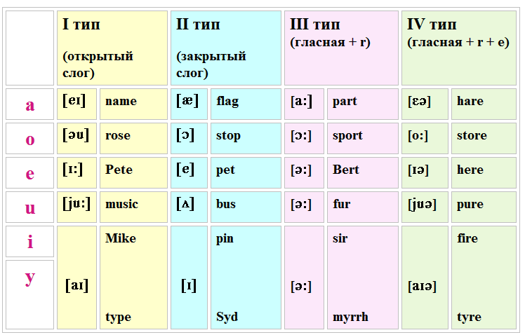

Таблица чтения гласных букв под ударением
Ударные слоги в английском языке принято делить на 4 типа.
Открытый слог оканчивается на гласную: try, be или на немую e, перед которой стоит согласная: like, name. Гласная буква в открытом слоге читается как в алфавите.
Закрытый слог оканчивается на согласную (кроме r): men, can. Гласная буква в закрытом слоге передаёт краткий звук.
